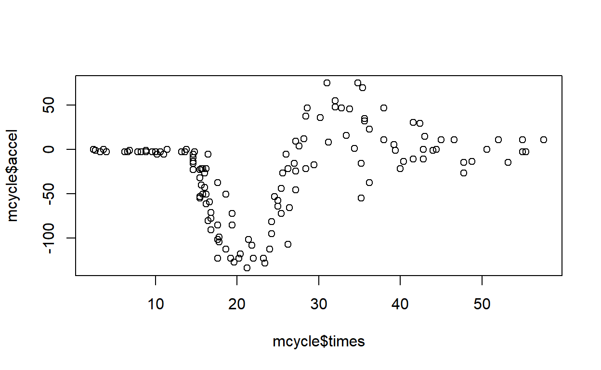
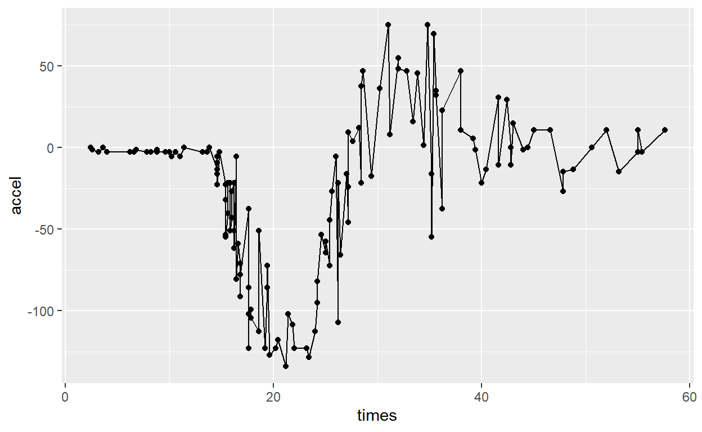
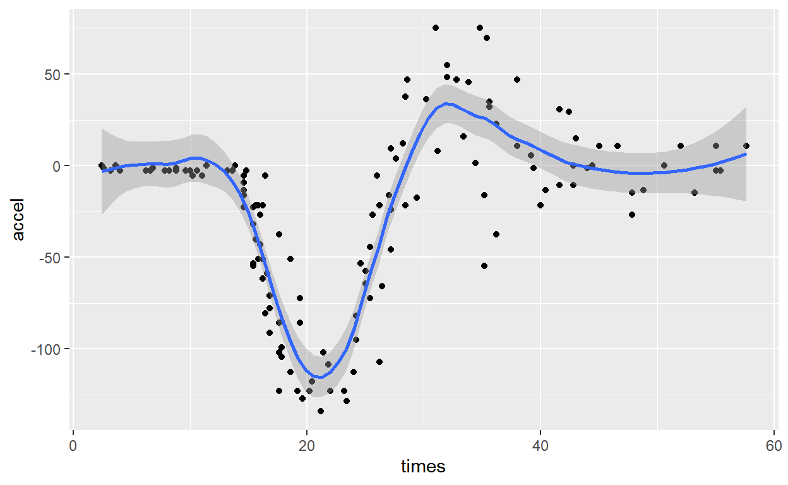
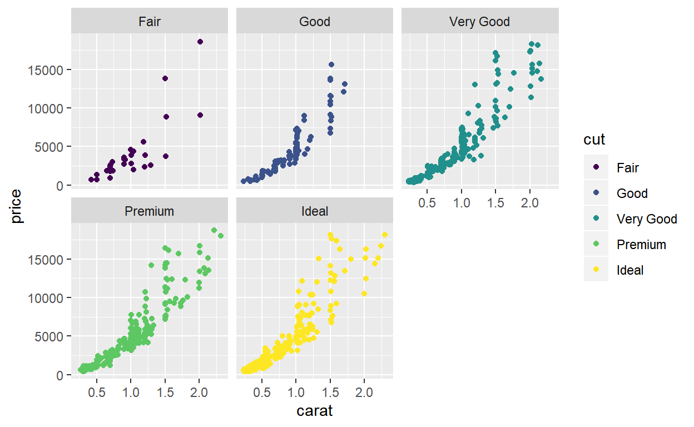
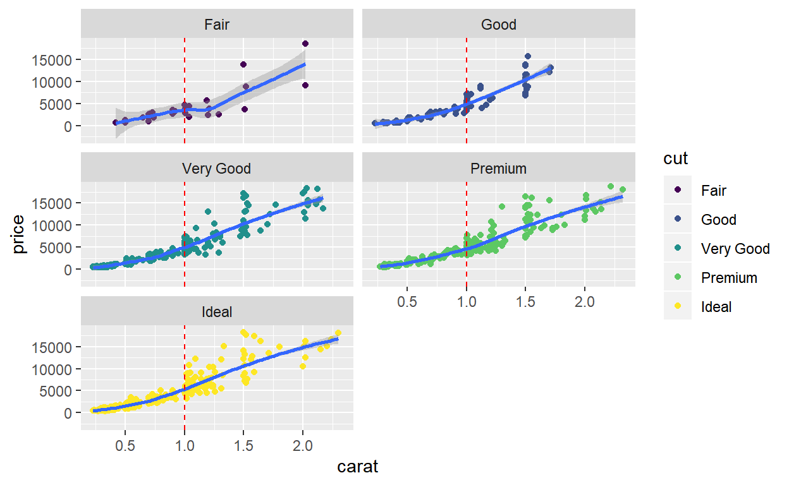
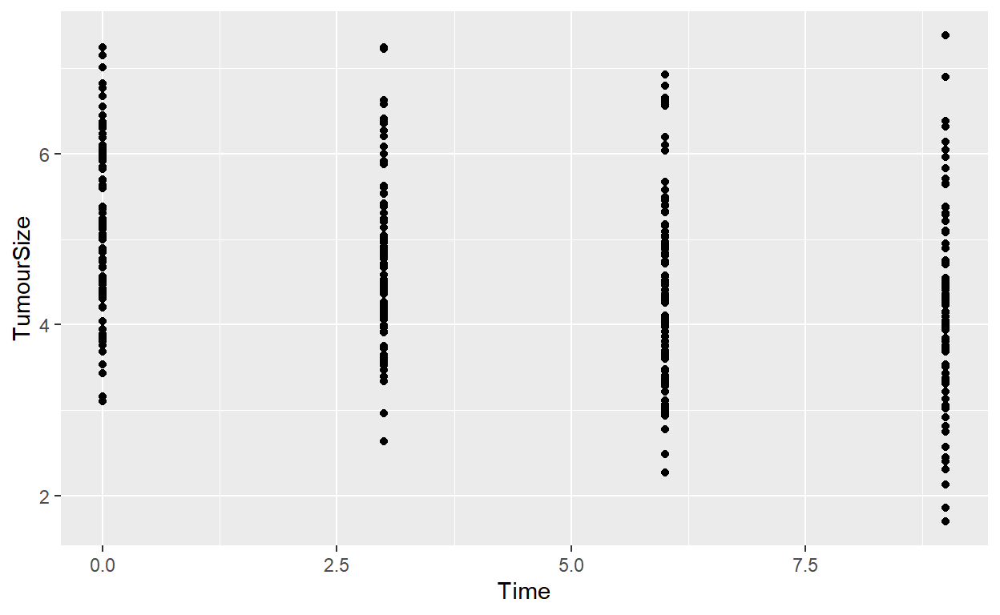
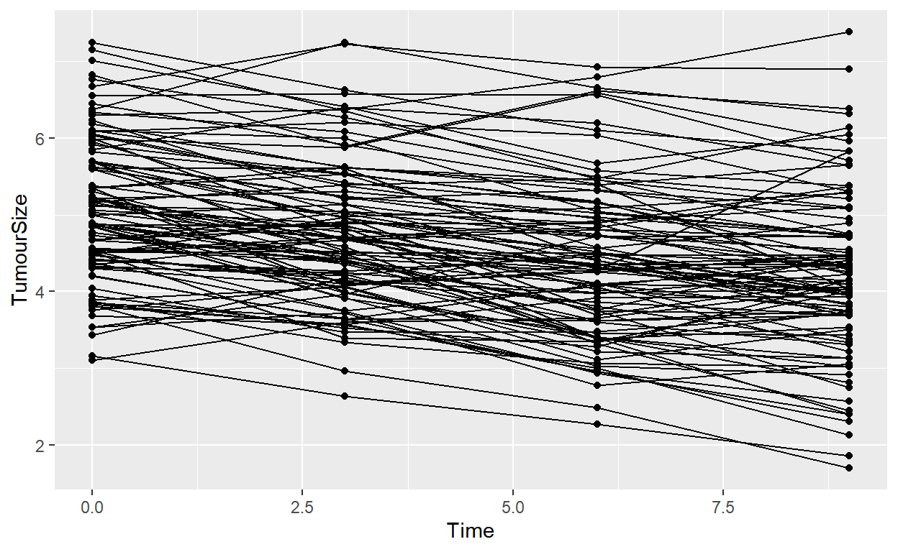
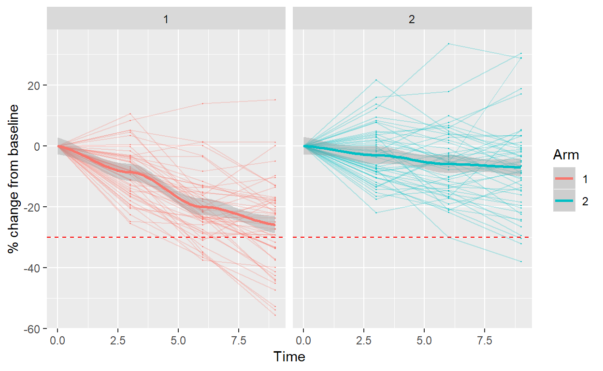
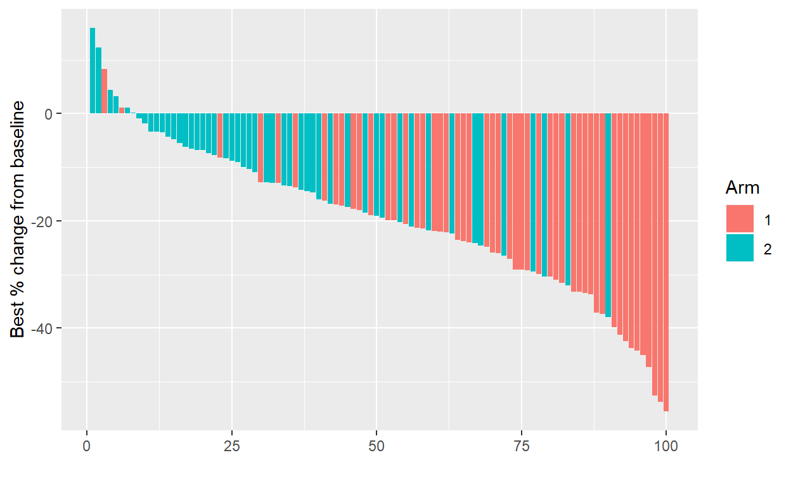

Welcome
This tutorial introduces you to the R package ggplot2. It is an implementation of the The Grammar of Graphics (Willis & Rope, Springer, 2005), a conceptual description of how to marry commands to data to produce practically every kind of visualisation seen in scientific publications.
Learning Objectives
Upon completion of this session, you will:
- Be able to produce plots using ggplot2 in R;
- Understand geometries and aesthetics in the grammar of graphics;
- Be able to visualise repeated measures data from RCTs.
Geometries & aesthetics
The first step to making sense of your data is to visualise it. According to the help-files of the MASS package, the mcycle data set contains:
a series of measurements of head acceleration in a simulated motorcycle accident, used to test crash helmets.
Let’s take a look at the data.
mcycle %>% head()We have two columns. times contains the time in milliseconds after impact, and accel contains acceleraton measured in g.
Producing a scatter plot of these two variables in base R is trivially simple. We simple call plot specifying the \(x\) and \(y\) arguments:
plot(x = mcycle$times, y = mcycle$accel)
The plot may be simple but it is not particularly pretty. One of the attractions of ggplot2 is that the plots look journal-ready right from the outset. To reproduce the above plot in ggplot2, we first load the package
library(ggplot2)and then run:
mcycle %>%
ggplot(aes(x = times, y = accel)) +
geom_point()
The new plot is certainly prettier, but the commands to produce it are much more complex. ggplot2 certainly has a learning curve and may seem needlessly arcane initially. But its power comes with its breadth and its consistency. Once you learn the principles, you will quickly learn how to create all manner of plots.
The first thing to stress is that the command starts with the data and then proceeds with the pipe operator, %>%. Recall that the pipe operator takes the object on the left and feeds it in as the first argument to the function on the right. So the call above is equivalent to
ggplot(mcycle, aes(x = times, y = accel)) +
geom_point()The second thing to stress is that plots in ggplot2 are created with a call to the function ggplot. Within this function is a call to another function called function aes. This function lets you specify the aesthetics of the plot. Aesthetics in the grammer of graphics are how you associate variables in your data to properties of the plot. The call to aes above is saying “The \(x\)-coordinates for this plot are stored in the times column of my data set, and the \(y\)-coordinates are stored in accel”. There are many aesthetics that can be specified, like colour, group, fill, shape, linetype. We will encounter these below.
The third thing to stress is that calls to ggplot are followed by calls to any number of geometries. Each geometry adds a layer to the plot representing the data in some way. Our example above uses geom_point which is the geometry for dropping points on a plot, as in a scatter plot.
You can add any number of geometries to a plot. They are overlaid, like layers. To add another to our example above, you simply append it using the + operator. For example, if we wanted to join the dots in this plot, we can add a line using geom_line:
mcycle %>%
ggplot(aes(x = times, y = accel)) +
geom_point() +
geom_line()
Hopefully, the problem with this geometry in this context is obvious straight away. The accel measurements are subject to error so the line geometry oscillates up and down, reflecting the noise about some underlying, imprecisely-observed process value. Perhaps a more useful geometry would be one that smooths out this random variation like a loess smoother. Luckily, ggplot2 provides such a function straight out of the box:
mcycle %>%
ggplot(aes(x = times, y = accel)) +
geom_point() +
geom_smooth(method = 'loess', span = 0.4)
That is better. We could easily read off the expected value at any time. We even get 95% confidence intervals for the mean thrown in for free. In the example above I specified the method and span. If you omit these details, geom_smooth will usually make excellent guesses at appropriate parameter values for you. In this instance,however, manual tweaking was desirable.
So far, you have learned:
- plots are produced using calls to the
ggplotfunction; - aesthetics are conveyed using the
aesfunction; - geometries are overlaid to produce rich visualisations.
We will learn more aesthetics and geomtries in the following sections.
Groups
We have learned how to put some points on a plot and join them up or fit a smooth line. So far, so good. Frequently, however, we will encounter data that is grouped in some way. For instance, in a clinical trial we may have patients allocated to different treatments. In this section we will learn how to reflect group-level information in ggplot2 using:
- colour in plots;
- the
group_bycommand; - the
facet_wrapandfacet_gridcommands.
We will use the diamonds1k dataset, a randomly-sampled 1000 rows from the diamonds dataset that ships with ggplot2. The original dataset has 50,000 records. We use a subset here because it is much faster.
diamonds1k %>% head()We see that the dataset includes information on the carat size and price of many diamonds, and that these are stored as numerical variables. Furthermore, there are ordinal variables reflecting cut, color, and clarity. Many of the online ggplot2 examples use the diamonds dataset so building some familiarity with it will be beneficial.
Colour
Let’s examine the relationship between carat and price. Using your skills from the previous section, produce a simple scatter plot of carat on the \(x\)-axis, and price on the \(y\)-axis.
diamonds1k %>%
ggplot()Describe the relationship. If you want a bigger carat, what are you going to need?
We want to learn how to reflect group or cohort information in plots. In many cases, merely using colour to distinguish one group from another will be sufficient.
Let’s investigate how cut affects the carat-price relationship using colour to distinguish the groups. To produce a scatter-plot with a different colour for each level of cut, you need to tell ggplot2 that the choice for colour will be determined by the cut variable. Furthermore, because one of the aesthetics in your plot will be determined by one of your variables, the association between colour and cut is defined within a call to aes. Have a go at producing that plot (There is a hint if you get stuck).
aes(x = ..., y = ..., col = cut)Pretty. Can you discern the effect that cut has on the relarionship between carat and price? Me neither. Giving each group its own subplot might make things clearer. We cover that next.
Facets
If your plot is a bit too noisy, sometimes a very useful trick is to make several versions of the same plot, with each showing the data for one particular group. This is achieved in ggplot2 using the facet_wrap and facet_grid commands. These are applied to a plot using the + operator, exactly as new geometries are. The subplots are displayed in a matrix shape.
facet_wrap takes as its first argument a command like ~ group_level. This tells it to produce a copy of the plot for each level of group_level. For example, to facet our plot above by cut, we run:
diamonds1k %>%
ggplot(aes(x = carat, y = price)) +
geom_point(aes(col = cut)) +
facet_wrap(~ cut)
Notice that the subplots are on identical axes? This makes it possible to read horizontally and vertically to compare groups.
facet_wrap also takes optional parameters ncol or nrow, specifying the number of columns or rows to use in the grid of plots. You only need to use one because the other is implicit. If both are omitted, ggplot2 decides for you. Edit the example above to produce a plot with five columns:
From this plot, can you detect meaningful differences in expected price for different qualities of cut? If not, maybe a smooth line fit to each group will make things clearer. Recalling the previous page, we can add a smoother using + geom_smooth(). Do that now:
The smooths reflect only the data in each subplot. This is because the facet_wrap command splits the dataset and that split perpetuates through to the call to geom_smooth. Thus, grouping has been achieved without it really being that explicit.
What do you make of the relationship between cut and price? The effect is detectable in this plot, but it looks surprisingly weak to me.
What do you expect a 1 carat diamond to cost for each type of cut? To make it easier to look up from the \(x\)-axis, you can add a vertical line to each plot. This is just another geometry, geom_vline to be precise. And it is added in the usual way:
diamonds1k %>%
ggplot(aes(x = carat, y = price)) +
geom_point(aes(col = cut)) +
facet_wrap(~ cut, ncol = 5) +
geom_smooth() +
geom_vline(xintercept = 1, col = 'red', linetype = 'dashed')## `geom_smooth()` using method = 'loess' and formula 'y ~ x'
Notice from the call to geom_vline that variables can be allocated values outside of aes when the values they take do not depend on the data. For example, in this example we wanted the vertical line at \(x = 1\), irrespective the data. In another example where the location of the vertical line depended on the dataset, the xintercept variable would instead have been allocated inside aes one of the columns in diamonds1k.
So let us revisit the question of interest: what do you expect a 1 carat diamond to cost for each type of cut?
Perhaps the effect of one of the other qualitative variables will be more pronounced. Take the example immediately above and change it to reflect the effect ofclarity:
Grouping
The third method of grouping data is to explicitly specify the group aesthetic. This is required, for instance, when you want to show lines on the same plot. A common example of this in medical research is repeated outcome measures, like quality of life scores. We investigate such a scenario now with a simulated dataset from a two-arm trial where tumour size was measured at baseline and several times post-baseline.
The dataset is quite large but the first few rows look like this:
tumours %>% headThe standard way of viewing the tumour sizes through time is:
tumours %>%
ggplot(aes(x = Time, y = TumourSize)) +
geom_point()
but this plot shows no grouping information: we do not know which points join up. i.e. which points are associated with which patient. Edit this example by appending geom_line() to get line-plots (do not worry about trying to convey the grouping variable for now):
tumours %>%
ggplot(aes(x = Time, y = TumourSize)) +
geom_point()Does this look strange weird? What has gone wrong?
The plot has joined the points as they arrived in the data-frame. The result is that unrelated points have been joined together to create a non-sensical plot. We need to set the group aesthetic within the call to geom_line to be TNO to reflect that only points within the same patient if (called TNO) should be joined. We do that like this:
tumours %>%
ggplot(aes(x = Time, y = TumourSize)) +
geom_point() +
geom_line(aes(group = TNO))
Notice that there are now two calls to aes. Aesthetics can be assigned inside the ggplot function and inherited by all geometries. Or they can be overridden in a specific geometry by nesting a call to aes inside that geom_XYZ function. Colour the points and lines by adding col = TumourSize inside the call aes inside the call to ggplot:
tumours %>%
ggplot(aes(x = Time, y = TumourSize)) +
geom_point() +
geom_line(aes(group = TNO))Now adapt that example by relocating the col = TumourSize part from the general aes call to the aes call inside geom_line.
tumours %>%
ggplot(aes(x = Time, y = TumourSize)) +
geom_point() +
geom_line(aes(group = TNO))What happened? Is that what you expected? Do you understand how aesthetics can be inherited and overriden?
Spider plot
We will finish off this session by producing a plot that is commonly seen in cancer trials literature. A spider plot shows the repeated measures of tumour size relative to baseline. This last bit in italics is important because tumour sizes are analysed under the RECIST criteria for response compared to baseline.
To marry up each observation with the relevant baseline observation, we can use a dplyr join.
To do this, first note that the subset of rows with Time == 0 is the set of baseline observations:
tumours %>%
filter(Time == 0) %>%
select(TNO, Baseline = TumourSize)Notice how the TumourSize variable in this dataset has been given the alias Baseline. This is to avoid confusion in the imminent change-from-baseline calculation.
The baseline dataset can be joined to the original dataset by TNO:
tumours %>%
left_join(
tumours %>%
filter(Time == 0) %>%
select(TNO, Baseline = TumourSize), by = 'TNO'
)The join here:
- takes every row in the left-hand-side (LHS, here
tumours)… - and finds any number of matching records in the right-hand-side (RHS)…
- with the same
TNOvalue… - and pools the columns.
Note: The significance of the word left in left_join is that the LHS record is retained even if no match in the RHS could be found. Other types of joins exist, like right_join, full_join, anti-join. Be aware that the type of join determines what data you see. Joins can be confusing and deserve some dedicated study. We close this sidebar on that cautionary note.
The joined data-set has TumourSize and Baseline in each record. Obviously the two columns are equal when Time = 0. The same is not true of later values - take a look by clicking on the blue tab numbers.
Before we can produce the spider-plot, we need to calculate the percentage change from baseline. Do that now using the mutate command to calculate the ChangeFromBaseLine variable:
tumours %>%
left_join(
tumours %>%
filter(Time == 0) %>%
select(TNO, Baseline = TumourSize), by = 'TNO'
) %>%
mutate(ChangeFromBaseLine = )Do your numbers look right? If so, paste your command below and add commands from earlier examples in this section to produce line-plots of repeated measures by patient. Put Time on the \(x\)-axis, and ChangeFromBaseLine on the \(y\)-axis.
Before clicking through to see my attempt on the next page, attempt these embellishments:
- add some colour;
- add a horizontal line with
geom_hlineat \(y\) = -30%. This is the RECIST threshold for partial response; - facet to show the arms in separate plots
- add smoothers for each Arm;
- fade the patient-level lines using alpha = 0.25 (note this is not data-dependent so it does not go in
aes()!)
Final spider-plot
tumours %>%
left_join(
tumours %>%
filter(Time == 0) %>%
select(TNO, Baseline = TumourSize), by = 'TNO'
) %>%
mutate(
ChangeFromBaseline = 100 * (TumourSize / Baseline - 1),
Arm = factor(Arm)
) %>%
ggplot(aes(x = Time, y = ChangeFromBaseline, col = Arm)) +
geom_point(size = 0.2) +
geom_line(aes(group = TNO), alpha = 0.25) +
geom_hline(yintercept = -30, col = 'red', linetype = 'dashed') +
geom_smooth() +
facet_wrap(~ Arm) +
labs(y = '% change from baseline')
How does your attempt compare to mine?
More importantly, which treatment would you prefer?
Quiz
Let us recap some of what we have learned with a quiz.
Exercise
Take the spider-plot example and adapt it to create a waterfall plot. This type of plot, seen commonly in contemporary oncology trials research, shows the best change from baseline in tumour size in individual patients, ordered as a cascade from the patient showing worst change to the patient showing the best change. An example is shown below.
Some hints:
- The
dplyrcommandarrange(col_name)can be used to order a data set bycol_name; - you can use
aes(x = seq_along(y_var), y = y_var)to generate a sequence 1, 2, …,length(y_var)forx; geom_colwill produce a bar-chart fromxandyaesthetics;- the
labscommand will allow you to override labels for the \(x\)- and \(y\)-axes, amongst others; - the aesthetic
colfor ageom_colcontrols the colour of the line enclosing the bar; the aestheticfillcontrols the colour used to fill the bar.

See how close you can get to this image. If you cannot reproduce it fully, do as much as you can, and make a note of the aspects you could not achieve. Or better yet, try to improve on it.
Please email your image and code to k.brock@bham.ac.uk